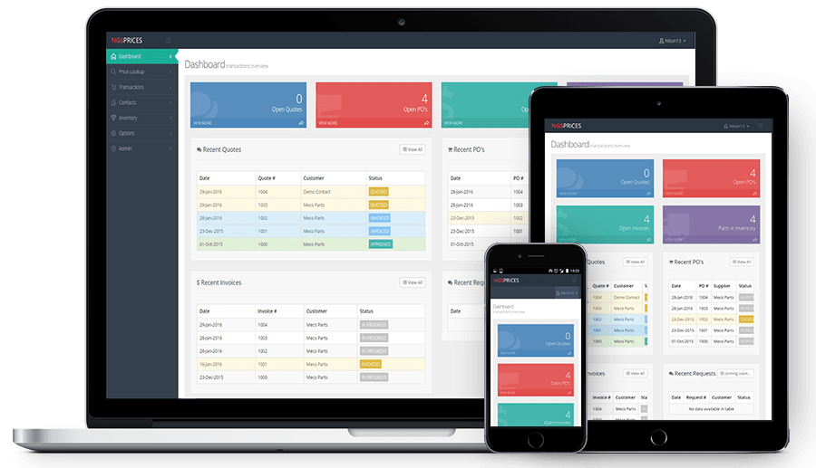

Hello
I'm Nilson
IT Professional & Aspiring Web Developer
Download Resume
About Me
Who am I? I'm just a guy who loves computers and electronics. I've worked in the IT space for many years, and have discovered a passion for software engineering. I've spent the better part of a year fully immersing myself in the pursuit of growing my developer skills. I moved to the Silicon Valley to participate in a coding bootcamp, am currently attending a coding school there and I've completed dozens of hands-on trainings on serveral programming languages and software stacks.
Resume GithubEducation
Even with a college degree in hand, I decided to further my education by moving to California and enrolling at a coding school in the Silicon Valley. Although school keeps me plenty busy, I've spent any downtime I find taking online courses to further my knowledge.
June 2009 - 2013
B.S. Information Technology
Florida International University
Graduated Cum Laude with a B.S. in Information Technology, a minor in Business Administration and specializing in Systems Administration, Databases and Web Development.
October 2017 - Present
Coding School
42 Silicon Valley
42 Silicon Valley is an innovating engineering college in the San Francisco Bay Area, with a focus on project based learning and an emphasis on peer to peer interactions. I am currently enrolled here.
October 2017 - Present
Online Trainings
Udemy, Lynda, Pluralsight, etc...
These trainings have exposed me to technologies and software stacks in a pragmatic, yet structured way that made it very easy to start using them on academic, personal, and professional projects.
Projects

asp.net
bootstrap
sql server
azure
NgsPrices Web App
NgsPrices is an Invoicing and Inventory management app used by Caterpillar parts dealers across the globe. It is currently in-production and is being used by over 20 businesses to fulfill their day-to-day tasks. I worked on this project entirely on my own.
wordpress
mysql
cPanel
The Story of Jesus Study
This was a volunteer opportunity for a church that wanted to form a study group with members around the world. I worked alongside a non-technical church member who made most of the major decisions concerning theme, assets, UI navigation, etc...
html/css
jquery
photoshop
NgsPrices Landing Page
NgsPrices is an Invoicing and Inventory management app used by Caterpillar parts dealers. It is currently in-production and is being used by over 20 businesses to fulfill their day-to-day tasks. I worked on this project entirely on my own.

react
redux
firebase
NgsPrices Web App
NgsPrices is an Invoicing and Inventory management app used by Caterpillar parts dealers. It is currently in-production and is being used by over 20 businesses to fulfill their day-to-day tasks. I worked on this project entirely on my own.

NgsPrices Web App
NgsPrices is an Invoicing and Inventory management app used by Caterpillar parts dealers. It is currently in-production and is being used by over 20 businesses to fulfill their day-to-day tasks. I worked on this project entirely on my own.

NgsPrices Web App
NgsPrices is an Invoicing and Inventory management app used by Caterpillar parts dealers. It is currently in-production and is being used by over 20 businesses to fulfill their day-to-day tasks. I worked on this project entirely on my own.